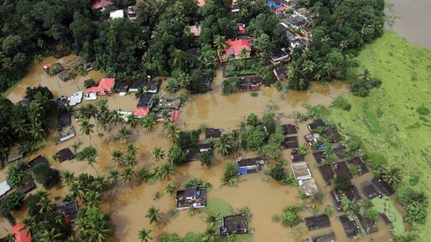
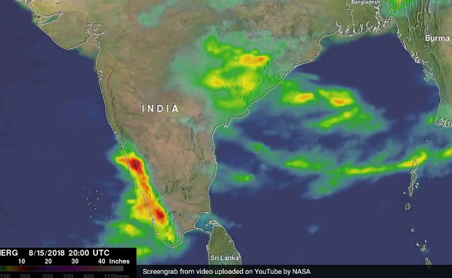
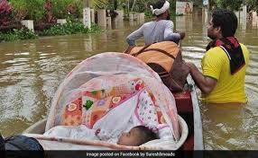

*Kerala floods: Monsoon waters kill hundreds in Indian state Officials and experts have said the floods in Kerala - which has 44 rivers flowing through it - would not have been so severe if authorities had gradually released water from at least 30 dams. "This could have been avoided if the dam operators had started releasing water in advance rather than waiting for dams to be filled up, when they have no alternative but to release water," said Himanshu Thakkar, a water expert at the South Asia Network on Dams, Rivers and People.
It was only when the floods peaked last week that water from more than 80 dams was released. "It is clear that major dams in the state - like Idukki and Idamalayar - only released water when Kerala was in the throes of heavy flooding, which actually proved to add further misery to the situation," Mr Thakkar said, He added that dam operators had had sufficient time to release water when it was relatively dry, which could have helped prevent some of the damage. Troops rush in to help rescue efforts Images after worst deluge in a century An assessment by the federal government earlier this year found that Kerala was among the 10 states most vulnerable to flooding. The state's administration is accused of not having taken the necessary steps to lower the flooding risk.
Experts say the federal government is also to blame because Kerala gets no early flood warning from the Central Water Commission (CWC), the only government agency authorised to do so. "The unprecedented floods and dam water releases also raise the questions about flood forecasting and advance action by the CWC," Mr Thakkar said. "We are shocked to find that the agency has absolutely no flood forecasting sites. It has only flood monitoring sites in Kerala," he added. "It's high time that the CWC includes some key dams like Idukki and Idamalayar and some key locations in its flood forecasting."
While the state has lagged behind on these preventive measures, the rainfall this monsoon season has been exceptionally high. James Wilson, an adviser on water issues for the Kerala state government, told the BBC: "It is a calamity that has happened after 100 years and no one had predicted this amount of rain. That's why there was no preparation for this level of disaster. "We have been managing floods every year, but this time it was extraordinarily extreme and that is why they were forced to release the waters of the dams."
Kerala recorded more than 37% excess rainfall in just two-and-a-half months, while in the past that has happened throughout the monsoon season which usually lasts about four months. Such heavy rainfall in a short space of time also triggered landslides that killed many people. Environmentalists say deforestation is responsible for this.
Some parts of Kerala have been marooned because wetlands and lakes that acted as natural safeguards against floods have disappeared because of rampant urbanisation and construction of infrastructure. Heavy rains in 2015 in the southern city of Chennai killed at least 70 people because of shoddy urban planning. But experts say the havoc that floods have wreaked in Kerala this time has added another dimension to the disaster: danger from dams. If they are not well managed and if rains continue to be erratic, as predicted by climate change scientists, a disaster of this scale is likely to occur more often than once in a century.